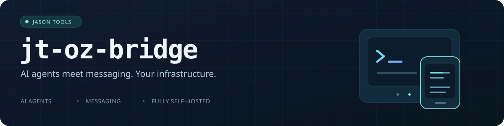

在聊天軟體裡和你的 AI 程式開發 Agent 對話。
jt-oz-bridge 讓 AI Agent 與通訊軟體溝通，目前從 OpenCode × Zulip 開始。在 Zulip 話題輸入任務、看著 Agent 執行、用手機回覆權限確認並取得完整結果，全程都在你平常在電腦上使用的同一個 OpenCode session 中進行。一切都在自己的基礎設施上運作。
狀態
開發預覽版 0.1.0，不是已完成的正式版本。
核心路由、資料保存與資安邊界已有大量自動化測試，部分流程也已在真實的 OpenCode 伺服器與 Zulip 組織上實測。完整的真人端到端使用與官方 iOS／Android app 上的使用尚未驗證。請先在拋棄式專案上試用。
它能做什麼
AI Agent 進入日常對話
任務、進度、提問與結果集中在聊天裡，手機和電腦都看得到。
OpenCode × Zulip
OpenCode 執行 Agent 與工具；Zulip 提供手機與電腦聊天、私人頻道與話題討論串。
全部地端，自有建置
通訊、橋接、Agent 與模型都在自己的硬體上運作，每一段資料流都由你掌控。
同一個 session，不是複本
每個話題綁定一個既有的 OpenCode session；不複製歷史、不 fork，也不另起後端假裝接續。
用手機回覆權限
權限要求與 AI 的提問會出現在話題中，用 !ok 1234 或按鈕回覆即可。
使用自己的模型與工具
從 OpenCode 自己的 catalog 選擇 provider、模型與 variant，沿用既有的 MCP 設定。
系統如何配合
在窄螢幕上可以左右捲動圖表。
元件
jt-oz-bridge serve：橋接服務。接收 Zulip 事件、檢查授權、呼叫 OpenCode API、送出結果，只在本機監聽。- 自己的 SQLite 資料庫（PostgreSQL 開發中），payload 以應用層加密；永遠不開啟 OpenCode 的資料庫。
- 選用的唯讀本機 observer，供
jt-oz-bridge sessions與doctor使用。 - 以 OpenCode 帳號執行的小型唯讀輔助服務，證明哪個行程、資料集與專案目錄才是真的。
- 選用單元：橋接停止時在 Zulip 發一則通知，恢復時再發一則。
一個話題，對應一個 session
私人頻道「project-a」
├── 修正登入 → OpenCode session A
└── API 測試 → OpenCode session B開一個話題，選擇你可以使用的既有 session（或在已納管的專案開新對話），然後直接輸入。頻道成員都能看到其中的話題，因此可見對象不同時，要分開使用私人頻道。
常用指令
在已連線的話題中，一般文字會送給 AI。指令一律是 ! 加一個英文字。
| 指令 | 用途 |
|---|---|
!ok／!no | 答應／拒絕 Bridge 問你的事；!ok 1234 回覆權限要求 |
!stop／!go | 停下這裡的全部工作／繼續暫停的工作 |
!status | 目前狀態與排隊中的訊息 |
!new／!disconnect | 開新對話／中斷話題連線（session 仍留在 OpenCode） |
!model／!agent | 切換模型／Agent |
!files／!file 路徑 | 尋找檔案／下載檔案 |
!help | 其他所有指令 |
安裝、升級與移除
橋接在 Linux（systemd）上、與既有的 OpenCode 伺服器並行，以專用的非 root 帳號執行。每個版本都放在以 wheel SHA-256 命名的獨立目錄中，相依套件以雜湊鎖定，並附 CycloneDX SBOM。
安裝
- 建置 wheel、含雜湊的
requirements.txt與 SBOM，或帶著含相依 wheel 的離線套件包。 - 驗證
SHA256SUMS，以--require-hashes安裝到新的 venv，檢查 SBOM。 - 設定、產生金鑰、
migrate、安裝 systemd 單元、檢查/readyz。 - 連接 Zulip bot 與私人頻道，納管一個 OpenCode 專案。
升級
- 把新版本安裝在執行中版本的旁邊。
- 停止橋接、備份、
migrate。 - 切換 drop-in，等待
/readyz，做冒煙檢查。 - 回滾時指回前一版；schema 變更後則往前修正或還原備份。
離線安裝重點
# connected machine
uv build --wheel --out-dir "$OUT"
uv export --frozen --no-dev --no-emit-project --no-header --format requirements-txt -o "$OUT/requirements.txt"
pip download --require-hashes --only-binary=:all: --python-version 3.13 --platform manylinux_2_28_x86_64 \
-r "$OUT/requirements.txt" -d "$OUT/wheels" # plus SBOM and SHA256SUMS
# air-gapped target
sha256sum -c SHA256SUMS
uv venv --offline --python "$PY" "$R/venv"
uv pip install --offline --no-index --find-links ./wheels --require-hashes -r requirements.txt --python "$R/venv/bin/python"
uv pip install --offline --no-index --no-deps jt_oz_bridge-*.whl --python "$R/venv/bin/python"完整指令（包含確切的平台標籤、一併帶入 Python 與 uv，以及 SBOM 檢查）請見安裝指南。
資安模型
- 預設拒絕。只有設定過的 Zulip 使用者、私人頻道與專案授權能接觸 session。Bot 訊息一律忽略，模型輸出不能授予權限。
- 每次動作前重新檢查。重新確認來源訊息、成員、授權、綁定與確切的 session；結果不明的操作會保留待確認，絕不盲目重送。
- 以 OpenCode 為準，且保持私有。只用本機 API，從不讀它的資料庫，也從不重啟它。Agent 能做什麼仍由 OpenCode 的工具、MCP 與作業系統權限決定；橋接的確認不是 sandbox。
- 密鑰以參照方式提供，指向僅限擁有者讀取的檔案；加密金鑰與備份分開保存。
- 檔案就是檔案。只回傳原始 bytes；HTML 只提供下載，沒有互動式預覽。
- 強化的服務與供應鏈。專用帳號、無 capability、嚴格的檔案系統保護、雜湊鎖定的相依套件，每個版本都附 SBOM。
文件與相關專案
- jt-doc-tools：自架 PDF 與 Office 文件處理
- jt-ipam：IP 位址管理，整合基礎設施與監控
- jt-live-whisper：本機語音轉寫、翻譯與會議工具